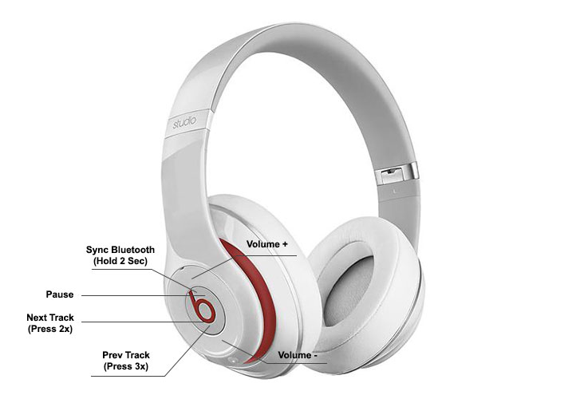

Original
Many important actions were condensed into the center button, making it hard to use and remember the conrols.
- 1 click to Pause
- 2 clicks for Next Track
- 3 clicks for Previous Track
- Hold for 2 seconds to sync Bluetooth
Not only are these controls hard to remember, they are very innacurate. Over 75% of the time I want to skip to the next track, I end up accidentally pausing the music on my first try.Then I sit and wonder whether or not I paused it or if I'm just waiting for the next song to start.

Simplified
A very simple yet extremely effecive modification makes this menu much more useable. I've distributed two of the more common controls, Next and Previous, to the left and right end of the earpeice. I've also added bright icons over each button. With these universal icons, no one would even need to read the manual to know how to use the headphones.